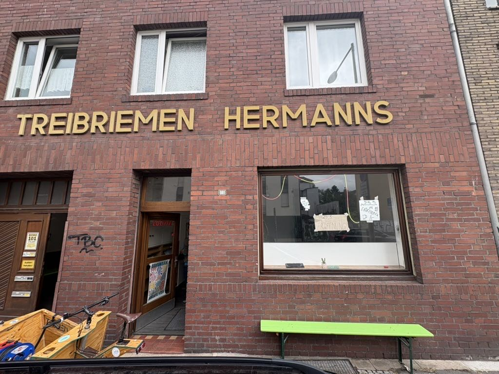
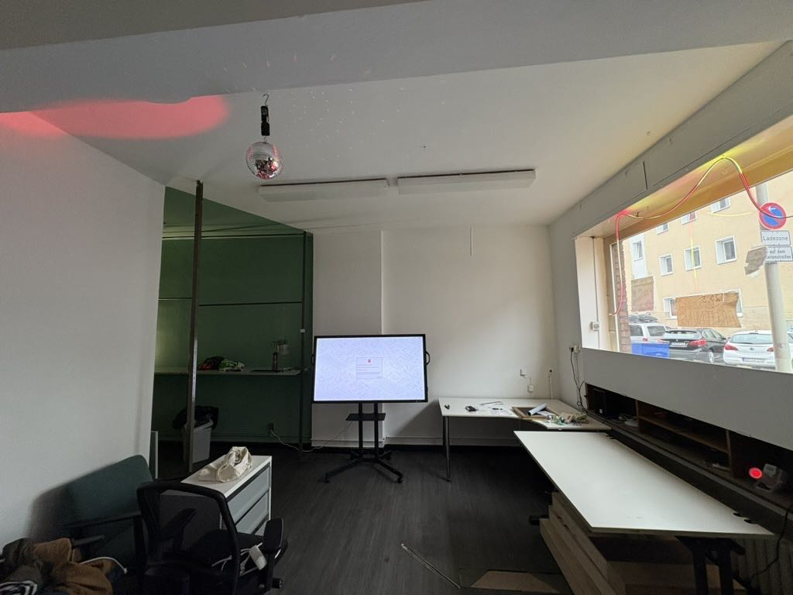
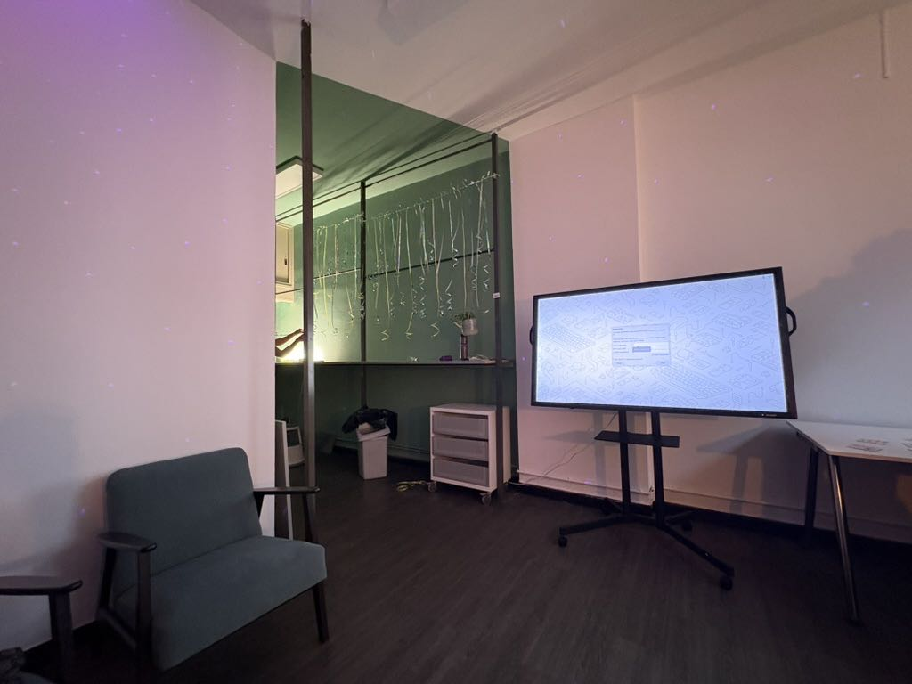
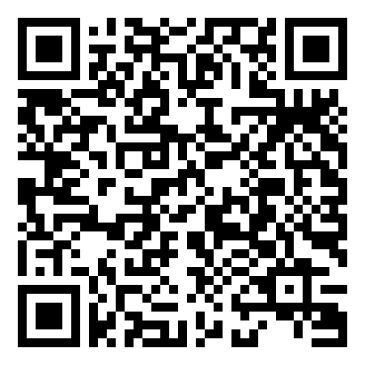
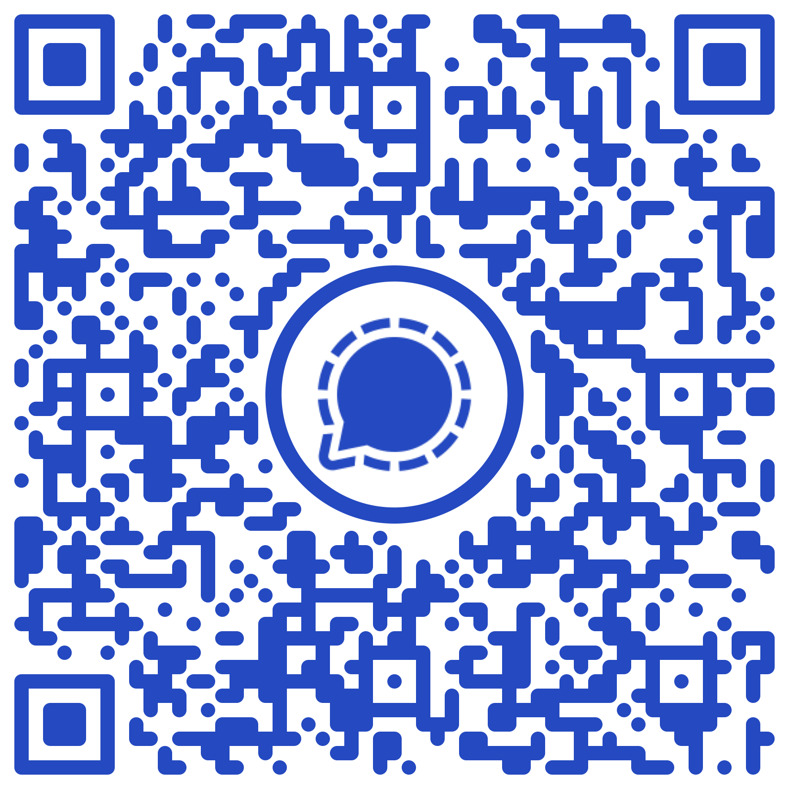

bitcircus101 – Hackspace Bonn
+------------------------------------------+
| |
| bitcircus101 |
| Dorotheenstraße 101 |
| |
| +---------+ +-------+ |
| | Desk | | Art | |
| +---------+ +-------+ |
| |
| +------+ +------+ |
| | | | | |
| |Chair | +-----+ | Desk | |
| | | | | | | |
| +------+ |Table| +------+ |
| | | |
| +------+ +-----+ +------+ |
| | | | | |
| |Chair | |Shelf | |
| | | | | |
| +------+ +------+ |
| |
| +---------+ |
| | Plants | |
| +---------+ |
| |
+--[ lights: on. freitags: besetzt ]-------+
Dorotheenstraße 101, Bonn. Freitags ab 20 Uhr. Der Lötkolben ist warm, das WLAN schneller als deine Ausreden, und irgendjemand debuggt gerade etwas, das eigentlich schon längst hätte funktionieren sollen.
Reinschauen kostet nichts außer Neugier.
Kein Anmelden, kein Mitgliedsantrag, kein Elevator Pitch.
Einfach Freitagabend vorbeikommen – den Rest regelt
localhost.
Was hier passiert
Zwei Zimmer, reichlich Stauraum, 250 Mbit/s. Eine Community, die weiß was ein RFC ist – und trotzdem erklärt, wenn man fragt.
bitcircus101 will der Tech- und IT-Treffpunkt in Bonn sein – für Leute, die Dinge wirklich verstehen wollen. Open-Source Software, Datensouveränität, alte spannende Hardware und aktuelle KI-Themen: hier landet, was gerade wirklich passiert – nicht das, was in Hochglanz-Decks steht.
- Open-Source Software, eigene Tools, Infrastruktur
- Datensouveränität, IT-Security, Reverse Engineering
- Alte Hardware wiederbeleben, Elektronik, Löten
- KI-Projekte, LLMs, eigene Modelle – hands-on
- Workshops und Schulungen – von der Community, für die Community
Kein Kurs, kein Bootcamp, kein Coworking. Eine Community, die Dinge baut, versteht und weitergibt – und sich freut, wenn jemand Neues mit einer Frage reinkommt.



Nächste Termine
Keep the lights on
Miete, Strom, Internet – der Raum hat laufende Kosten. bitcircus101 wird ausschließlich durch Spenden und Umkostenbeiträge realisiert – bisher keine Fördermittel, kein Verein, kein Backup.
Du kannst bitcircus101 für Workshops, Meetups oder Projekte reservieren – jede Nutzung deckt einen Teil der Kosten und hält den Raum offen für alle.
Kontakt
E‑Mail: info@bitcircus101.de
Instagram: @bitcircus101
Signal – zwei Channels, such dir deinen aus:

Ankündigungen · wann ist auf
reden · diskutieren · fragenscannen oder klicken
bitcircus101
Dorotheenstraße 101
53113 Bonn
50.74042° N · 7.08942° E